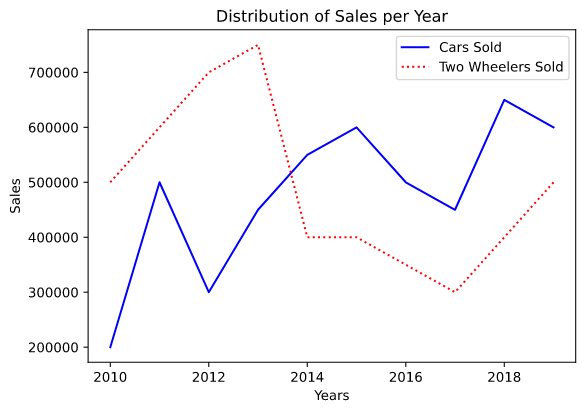
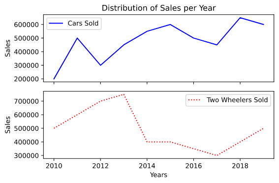

Sub plots provide an object oriented method to create a plot or multiple plots. With the help of sub-plots we can plot multiple figures or multiple plots on a single figure. The subplots() method is used for this purpose.
Imports
# importsfrom matplotlib import pyplot as plt import numpy as np
Writing down the data
# data to be plotted
years = np.array([2010,2011,2012,2013,2014,2015,2016,2017,2018,2019])
cars_sold = np.array([200000,500000,300000,450000,550000,600000,500000,450000,650000,600000])
two_wheelers_sold = np.array([500000,600000,700000,750000,400000,400000,350000,300000,400000,500000])
Initializing the subplot object and plotting out the data
# instantiating the subplot class
fig,ax = plt.subplots()# this object initializes both the fig and ax variables. # By default a subplot has 1 axes but it can changes by passing values to the argument nrows and ncols # plotting # the ax object is used instead of the plt object # plotting the data for the cars
ax.plot(years,cars_sold,color="Blue",label="Cars Sold")
# plotting the data for two wheelers
ax.plot(years,two_wheelers_sold,color="Red",linestyle=":",label="Two Wheelers Sold")
ax.legend()
plt.tight_layout()
# 'set_' prefix is used for function names to set labels and titles when using subplots
ax.set_xlabel("Years")
ax.set_ylabel("Sales")
ax.set_title("Distribution of Sales per Year")
plt.show()
Here is our first plot using subplot:

First Subplot
# creating more than one plots in the same figure
fig, (ax1,ax2) = plt.subplots(nrows=2,ncols=1,sharex=True) # nrows defines the number of axes in the row and ncols decides the number of axes in the column# setting sharex to true defines that both the plots will share the x axis ticks,same is true for sharey. # plotting the data for the cars # we will use the ax1 axes to draw our first plot and we won't be using any xlabels cause we have opted to share the x axise between the two plots
ax1.plot(years,cars_sold,color="Blue",label="Cars Sold")
ax1.set_ylabel("Sales")
ax1.set_title("Distribution of Sales per Year")
ax1.legend()
# plotting the data for two wheelers # we will be using the ax2 axes to draw our second plot and we won't be giving it a title as we have the same title for both the plots
ax2.plot(years,two_wheelers_sold,color="Red",linestyle=":",label="Two Wheelers Sold")
ax2.set_xlabel("Years")
ax2.set_ylabel("Sales")
ax2.legend()
plt.tight_layout()
plt.show()
Here's what two plots drawn on the same figure look like:

Figure With Multiple Plots
Plotting two different figures
# plotting on two different figures # instantiating two different plot figures
fig1,ax1 = plt.subplots()
fig2,ax2 = plt.subplots()
# plotting the data for the cars
ax1.plot(years,cars_sold,color="Blue",label="Cars Sold")
ax1.set_xlabel("Years")
ax1.set_ylabel("Sales")
ax1.set_title("Distribution of Sales per Year")
ax1.legend()
# plotting the data for two wheelers
ax2.plot(years,two_wheelers_sold,color="Red",linestyle=":",label="Two Wheelers Sold")
ax2.set_xlabel("Years")
ax2.set_ylabel("Sales")
ax2.set_title("Distribution of Sales per Year")
ax2.legend()